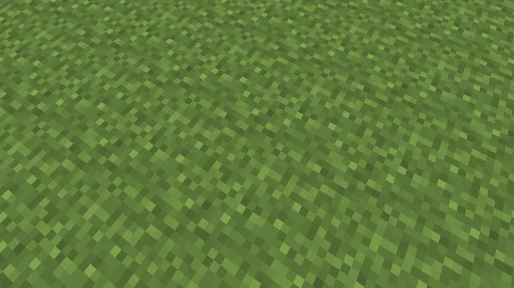
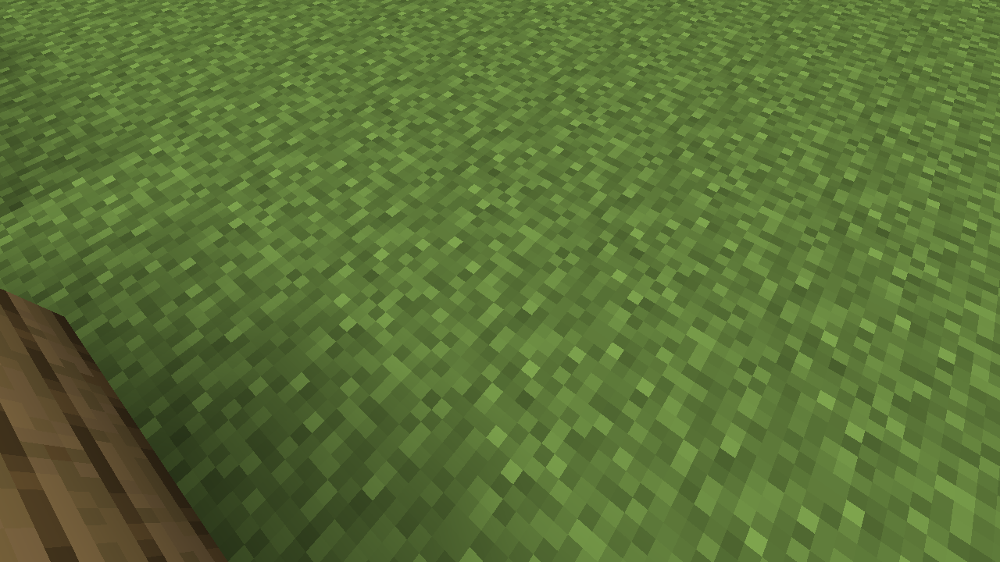
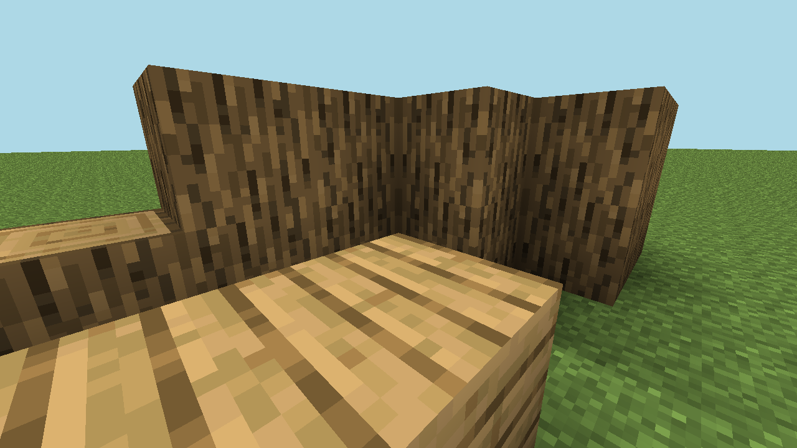
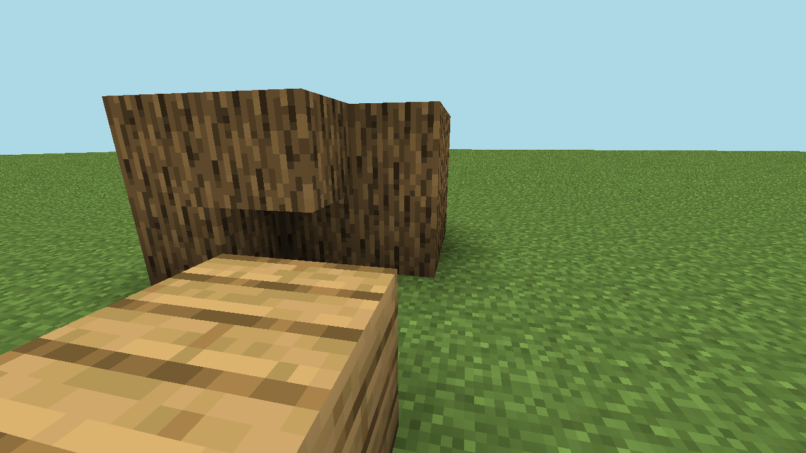

ReachedBenchmark target at cycle 12
29/50Cycles completed before stop
1,250,927Total tokens, 88,992 reasoning
7Visual captures, 0 failures
Behavior target result: evidence shows logs, planks, crafting table placement, wooden_pickaxe crafting/equip, and 6+ placed worksite/station blocks by cycle 12.
Run completion result: the requested 50-cycle run stopped at cycle 29 because OpenAI returned
insufficient_quota. Runtime status is therefore failed, even though the benchmark behavior target was already reached.Milestone Trend
Provider Latency Trend
Token Trend
Outcome Mix
Cycle Timeline
Green means verified progress, red means blocked/failed, purple underline means generated action authoring/trial appeared.
1action-card-020cycle-0001: verified_progress / action-card-020 2action-card-003cycle-0002: verified_progress / action-card-003 3action-card-003cycle-0003: verified_progress / action-card-003 4action-card-022cycle-0004: verified_progress / action-card-022 5action-card-005cycle-0005: verified_progress / action-card-005 6action-card-009cycle-0006: verified_progress / action-card-009 7action-card-022cycle-0007: verified_progress / action-card-022 8action-card-005cycle-0008: verified_progress / action-card-005 9action-card-005cycle-0009: verified_progress / action-card-005 10action-card-006cycle-0010: verified_progress / action-card-006 11action-card-008cycle-0011: no_progress / action-card-008 12action-card-010cycle-0012: partial_verified_progress / action-card-010 13action-card-009cycle-0013: blocked / action-card-009 14action-card-009cycle-0014: blocked / action-card-009 15action-card-009cycle-0015: blocked / action-card-009 16action-card-009cycle-0016: verified_progress / action-card-009 17action-card-003cycle-0017: blocked / action-card-003 18action-card-004cycle-0018: blocked / action-card-004 19missingcycle-0019: blocked / missing 20action-card-004cycle-0020: blocked / action-card-004 21missingcycle-0021: blocked / missing 22action-card-003cycle-0022: blocked / action-card-003 23action-card-002cycle-0023: verified_progress / action-card-002 24missingcycle-0024: blocked / missing 25missingcycle-0025: blocked / missing 26missingcycle-0026: blocked / missing 27action-card-002cycle-0027: blocked / action-card-002 28missingcycle-0028: blocked / missing 29provider_contract_rejectedcycle-0029: blocked / provider_contract_rejected
Action Mix
Key Findings
- Target predicates were satisfied by cycle 12, but the harness did not stop early.
- After cycle 13 the run shifted into blocker recovery and generated action authoring.
- Generated action trials occurred in cycles 19, 21, 24, 25, 26, 28 and dominated latency/token spikes.
- Generated programs requested longer behavior than the runtime allowed; one clear mismatch was generated
timeoutMs: 40000vs runtimerun_mineflayer_programtimeout12000ms. gpt-5.5OpenAI usage was ledgered but no local budget matched that model, so the run ended only when provider quota failed.
Milestone Table
| Milestone | Reached | Evidence | Detail |
|---|---|---|---|
| Logs collected | cycle 1 | evidence/cycle-0001-action-01-collect_logs.json | 2 |
| Planks crafted | cycle 4 | evidence/cycle-0004-action-01-craft_item.json | oak_planks |
| Crafting table crafted | cycle 5 | evidence/cycle-0005-action-01-craft_item.json | crafting_table |
| Crafting table placed | cycle 6 | evidence/cycle-0006-action-01-place_block.json | 7,64,-2 |
| Sticks crafted | cycle 8 | evidence/cycle-0008-action-01-craft_item.json | stick |
| Wooden pickaxe crafted | cycle 10 | evidence/cycle-0010-action-01-craft_with_table.json | wooden_pickaxe |
| Wooden pickaxe equipped | cycle 11 | evidence/cycle-0011-action-01-equip_item.json | wooden_pickaxe |
| Worksite blocks placed | cycle 12 | evidence/cycle-0012-action-01-build_pattern.json | 5 placed by build_pattern |
| 6+ placed worksite/station blocks | cycle 12 | derived:placed-block-evidence | 7 unique placed worksite/station blocks |
Provider Usage By Cycle
| Cycle | Requests | Latency | Total tokens | Reasoning tokens | Stage latency |
|---|---|---|---|---|---|
| 1 | 1 | 21s | 26,960 | 194 | actor_turn_tool_selection 21s |
| 2 | 1 | 19s | 27,709 | 234 | actor_turn_tool_selection 19s |
| 3 | 1 | 19s | 28,012 | 248 | actor_turn_tool_selection 19s |
| 4 | 1 | 14s | 27,964 | 120 | actor_turn_tool_selection 14s |
| 5 | 1 | 15s | 28,408 | 117 | actor_turn_tool_selection 15s |
| 6 | 1 | 19s | 28,777 | 291 | actor_turn_tool_selection 19s |
| 7 | 1 | 14s | 28,940 | 189 | actor_turn_tool_selection 14s |
| 8 | 1 | 26s | 29,678 | 516 | actor_turn_tool_selection 26s |
| 9 | 1 | 17s | 29,084 | 144 | actor_turn_tool_selection 17s |
| 10 | 1 | 16s | 29,043 | 88 | actor_turn_tool_selection 16s |
| 11 | 1 | 16s | 29,306 | 205 | actor_turn_tool_selection 16s |
| 12 | 1 | 21s | 30,046 | 448 | actor_turn_tool_selection 21s |
| 13 | 2 | 55s | 36,800 | 1,032 | deliberation 27s actor_turn_tool_selection 29s |
| 14 | 2 | 51s | 37,421 | 900 | deliberation 31s actor_turn_tool_selection 21s |
| 15 | 2 | 59s | 38,808 | 2,065 | deliberation 27s actor_turn_tool_selection 33s |
| 16 | 2 | 64s | 38,948 | 2,066 | deliberation 26s actor_turn_tool_selection 38s |
| 17 | 1 | 19s | 30,160 | 151 | actor_turn_tool_selection 19s |
| 18 | 2 | 44s | 36,992 | 548 | deliberation 28s actor_turn_tool_selection 16s |
| 19 | 3 | 161s | 67,631 | 6,934 | deliberation 39s actor_turn_tool_selection 34s mineflayer_codegen 88s |
| 20 | 2 | 56s | 38,262 | 974 | deliberation 33s actor_turn_tool_selection 23s |
| 21 | 3 | 160s | 68,930 | 6,871 | deliberation 30s actor_turn_tool_selection 41s mineflayer_codegen 89s |
| 22 | 2 | 56s | 38,721 | 844 | deliberation 30s actor_turn_tool_selection 26s |
| 23 | 2 | 68s | 40,744 | 2,066 | deliberation 44s actor_turn_tool_selection 24s |
| 24 | 3 | 328s | 100,903 | 24,550 | actor_turn_tool_selection 34s mineflayer_codegen 294s |
| 25 | 3 | 164s | 69,550 | 8,785 | deliberation 26s actor_turn_tool_selection 36s mineflayer_codegen 102s |
| 26 | 3 | 198s | 73,608 | 10,896 | deliberation 32s actor_turn_tool_selection 38s mineflayer_codegen 127s |
| 27 | 2 | 60s | 40,797 | 1,032 | deliberation 32s actor_turn_tool_selection 27s |
| 28 | 3 | 190s | 73,719 | 10,448 | deliberation 32s actor_turn_tool_selection 41s mineflayer_codegen 117s |
| 29 | 3 | 112s | 69,300 | 6,036 | deliberation 31s actor_turn_tool_selection 78s mineflayer_codegen 3s |
| 30 | 1 | 3s | 5,706 | 0 | deliberation 3s |
Visual Evidence
Renderer screenshots are supporting evidence. World/inventory/block artifacts remain the source of truth for scoring.

2026-06-13T09:15:20.862Z

2026-06-13T09:17:15.061Z

2026-06-13T09:18:49.061Z

2026-06-13T09:22:29.251Z

2026-06-13T09:28:59.069Z

2026-06-13T09:43:14.922Z

2026-06-13T09:52:51.962Z
Artifacts
| Raw report | report.json |
|---|---|
| Auto review | report-review.md |
| Skill summary | runtime-review-summary.from-skill.json |
| Machine summary | summary.json |
| Actor workspace | data/actors/social-runs/social-cycle-ab6ad962-0672-4241-8e52-9daa3de2dc87 |